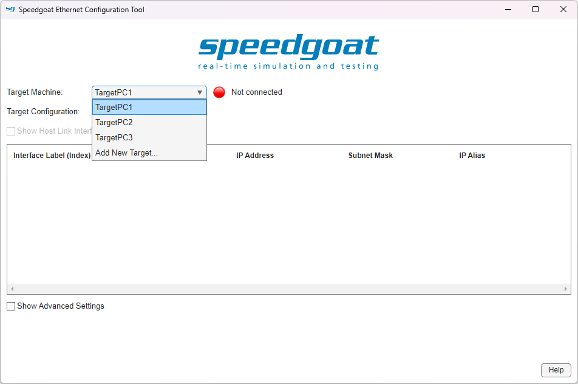
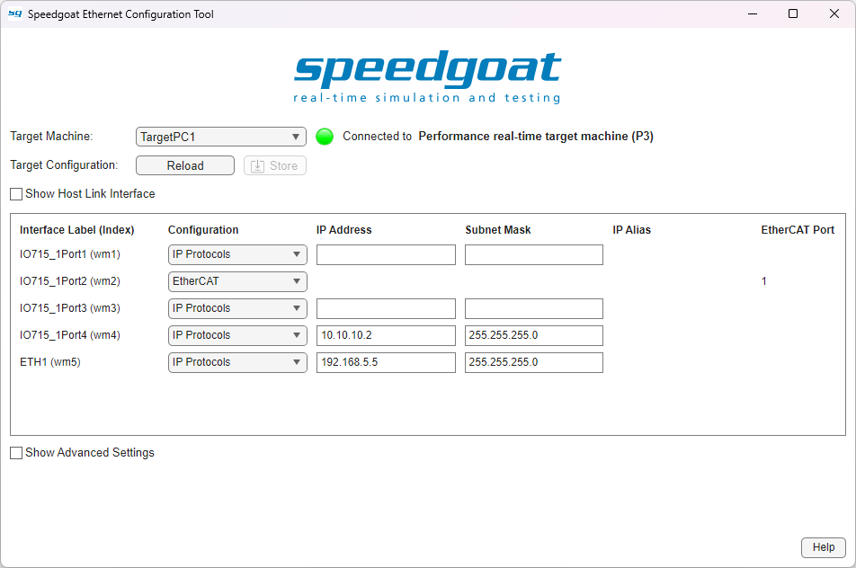
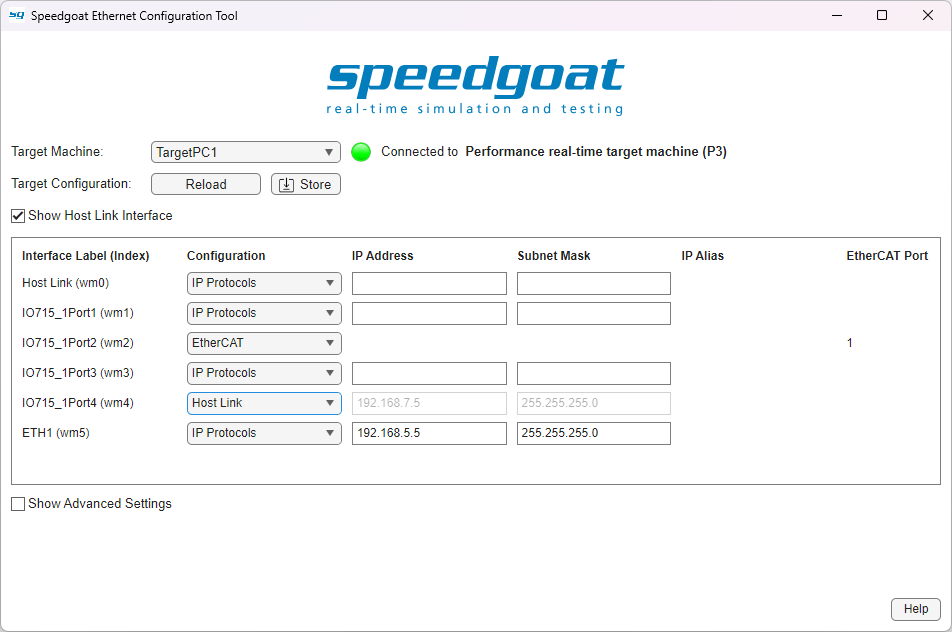
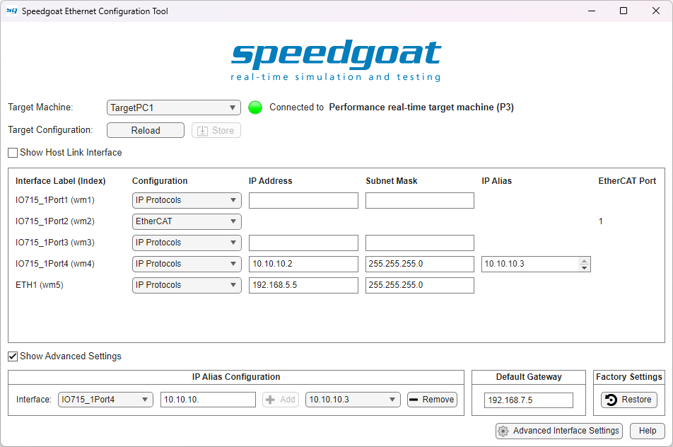
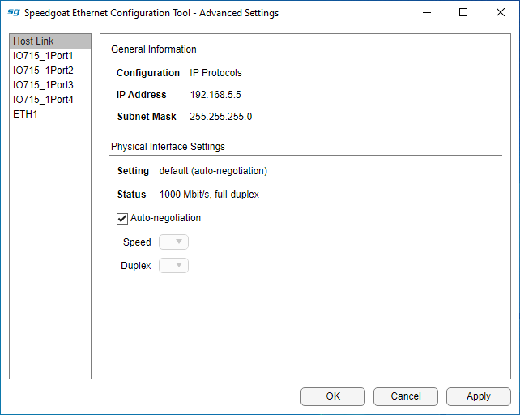

Speedgoat Tools
Speedgoat Tools — Speedgoat Ethernet Configuration Tool
Ethernet Configuration
![[Note]](images/note.png) | Note |
|---|---|
To debug networking issues, we recommend analyzing the traffic with a tool, such as Wireshark. |
In addition to the Host Link, most Speedgoat real-time target machines feature auxiliary Ethernet interfaces. More interfaces can be added with general-purpose Ethernet I/O modules, such as IO71X, IO731, or IO791. Starting with R2020b, these interfaces are configured with the Speedgoat Ethernet Configuration Tool. To open the tool, run the following command in the MATLAB command window:
speedgoat.configureEthernet

Select your target machine and click Connect & Load to get started. The tool will then try to establish a connection and load the current Ethernet configuration. If your selected target is already connected, the configuration will load automatically.

Configure each of your Ethernet interfaces either for IP Protocols (TCP/IP or UDP/IP) or EtherCAT. Note that for IP Protocols, all Ethernet interfaces must be configured to separate subnets. The Host Link is automatically configured for IP Protocols through the slrealtime APIs (Target Object, Simulink Real-Time Explorer).
If you select EtherCAT for at least one interface, the EtherCAT Port column appears. You will need to enter the information in this column in certain EtherCAT driver blocks in Simulink. The value can be copied to the clipboard using the right-click (context) menu.
After entering your configuration, click Store to apply the settings to the target machine. It will automatically restart, if necessary.
This configuration is now permanently stored on the target machine. It is not associated with any application and is not affected by updating the target software with the tg.update command.
Overriding the Host Link
Your target machine is configured to use the interface labeled Host Link for the host-target connection. If for some reason you need to use a different interface, you can display it by checking Show Host Link Interface.

You can now configure the interface labeled Host Link to be used with IP protocols and choose another interface for your Host Link connection. One interface must be configured to act as the Host Link. However, note that EtherCAT is not available on the interface labeled Host Link.
| Note |
|---|---|
Changing the Host Link interface is not supported on the Pulse real-time target machine. |
Advanced Settings
Check the Show Advanced Settings box to configure IP aliases, to change the default gateway, to restore your target machine to the factory settings, and to show the Advanced Interface Settings button.

Alias Configuration
To add an IP alias, select an interface, then enter the IP alias address and click the + Add button.
Interfaces will only appear in the drop-down list after they have been configured for IP Protocols with an IP address and a subnet mask and then applied to the target using the Store button.
The + Add button will only become active when the alias address entered is valid. Changes will be applied to the target machine immediately; there is no need to reboot the machine.
Up to 255 different IP aliases can be added to one Ethernet interface; use semicolons to enter multiple addresses at once.
By default, all IP aliases have a subnet mask of 255.255.255.255. You can optionally define a different subnet mask by appending a slash ('/') and the network prefix length to the alias IP address. The prefix length is a decimal number between 1 and 32 and defines the number of bits set to 1 (from left to right) in the subnet mask. For example, to define the IP alias 192.168.10.1 with subnet mask 255.255.255.0, enter "192.168.10.1/24".
To remove one or multiple IP aliases, select the alias in the drop-down list and click the - Remove button. Repeat the operation to remove further IP aliases.
Select All to remove all the IP aliases for the selected interface.
The changes will be applied to the target machine immediately; there is no need to reboot the machine.
IP alias settings, like all other Ethernet configurations, are persistently stored on the target. The IP alias addresses for the interface used as Host Link, however, are only persistent with MATLAB R2022a and later.
| Note |
|---|---|
Using protocols with many IP aliases on the Host Link interface reduces the performance of data streaming to applications, such as Simulation Data Inspector (SDI). |
| Note |
|---|---|
When defining IP aliases on different subnets than the primary IP address, you may not be able to transmit network packets with the default subnet mask, in this case you can set the subnet mask for the IP alias as mentioned above. |
Default Gateway
To change the default gateway, enter a new value directly in the Default Gateway field. The chosen gateway must be on the same subnet as one of the Ethernet interfaces configured for IP protocols. Click the Store button to apply the gateway to the target. The machine will then reboot automatically.
Factory Settings
To restore the factory settings, click the Restore button and confirm your selection. The Host Link will retain its current IP settings but will move back to the interface labeled Host Link (if you originally changed this interface). The default gateway will be reset to the Host Link IP address and all additional interfaces will be reset to IP Protocols with no IP address set. The target machine will reboot automatically.
Advanced Interface Settings
Click the Advanced Interface Settings button to open a separate window with more interface-specific settings.

Under General Information, you can see the current configuration, IP address and subnet mask. To change these settings, go back to the main window.
Under Physical Interface Settings, you can see both the current speed/duplex setting and the status of the interface and also change the speed/duplex values manually. The default is to use auto-negotiation, which determines the best speed/duplex values automatically.
Using PTP
If you want to synchronize your target machine's clock with the IEEE 1588 Precision Time Protocol, you may need to set up the protocol to use a specific Ethernet interface. Since not all Ethernet controllers can properly handle this protocol, Speedgoat provides an API to assist with the configuration:
speedgoat.showPtpInterfaces
Label Index PTPSupport Configuration
_____________ _______ __________ _________________________________________
{'Host Link'} {'wm0'} {'Yes'} {'IP: 192.168.7.5 Subnet: 255.255.255.0'}
{'IO791_1A' } {'wm1'} {'Yes'} {'IP: 192.168.5.5 Subnet: 255.255.255.0'}
{'IO791_1B' } {'wm2'} {'Yes'} {'EtherCAT' }
{'ETH1' } {'wm3'} {'Yes'} {'IP: 10.10.10.5 Subnet: 255.255.255.0' }
If the entry in the PTPSupport column is 'Yes', then the interface supports PTP and must be configured for IP protocols.
The Index column shows the name of the interface given by the operating system. To bind the PTP protocol, for example, to the interface labeled 'ETH1', you must add '-b wm3' to your tg.ptpd.Command. Refer to the MathWorks Simulink Real-Time help documentation to learn how to configure the PTP daemon.
Configuring Host Link on the Target Machine
If you are unable to configure the IP settings of your host computer to connect to the target machine, you can change the settings on the target machine directly.
Connect a keyboard and a monitor to your target machine and follow these instructions:
Switch from statusmonitor (on Console 1) to the shell on Console 2 using Ctrl+Alt+F2 (on MATLAB R2026a and later) or Ctrl+Alt+2 (on MATLAB R2025b and earlier)
Log in with root/root (unless you use a different root password)
Use the following command to change the IP address and subnet mask: speedgoat_setHostLink <ip-address> [netmask]
Examples:
speedgoat_setHostLink 10.10.10.5 (uses netmask 255.255.255.0)
speedgoat_setHostLink 10.11.12.13 255.255.0.0
This configures the interface labeled Host Link to use these settings immediately; no reboot is required.
![[Caution]](images/caution.png) | Caution |
|---|---|
When using the keyboard on the target machine, do not press the NumLock key. If you accidentally press the key (e.g., when entering the IP address),do not use the command history (up arrow), as this may freeze the target and a machine reboot will be required. |
Configuring Default Gateway on the Target Machine
If you are unable to configure the default gateway of your host computer to connect to the target machine, you can change the settings on the target machine directly.
Connect a keyboard and a monitor to your target machine and follow these instructions:
Switch from statusmonitor (on Console 1) to the shell on Console 2 using Ctrl+Alt+F2 (on MATLAB R2026a and later) or Ctrl+Alt+2 (on MATLAB R2025b and earlier)
Log in with root/root (unless you use a different root password)
Use the following command to change the default gateway: speedgoat_setDefaultGateway <ip-address>
Example:
speedgoat_setDefaultGateway 192.168.7.5
This configures the interface with the 192.168.7.5 IP address to be used as the default gateway; no reboot is required.
The same command can be used to remove the setting and go back to the default behavior. A reboot of the target machine will be required afterward: speedgoat_setDefaultGateway delete
| Caution |
|---|---|
When using the keyboard on the target machine, do not press the NumLock key. If you accidentally press the key (e.g., when entering the IP address), do not use the command history (up arrow), as this may freeze the target and a machine reboot will be required. |